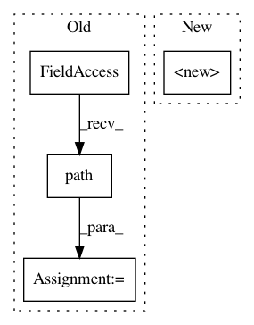

0a6edd21b9ab29a1f733b90ff15092e7a03f665d,src/python/twitter/pants/python/thrift_builder.py,PythonThriftBuilder,__init__,#PythonThriftBuilder#Any#Any#Any#,42
Before Change
self.config = config
distdir = os.path.join(self.root, "dist")
self.chroot = RelativeChroot(root_dir, distdir, target.name)
codegen_root = tempfile.mkdtemp(dir=self.chroot.path(), prefix="codegen.")
self.codegen_root = os.path.relpath(codegen_root, self.chroot.path())
self.detected_packages = set()
self.detected_namespace_packages = set()
def __del__(self):
After Change
raise PythonThriftBuilder.CodeGenerationException(
"Could not generate .py from %s!" % src)
def _run_thrift(self, source, bases):
thrift_file = source
thrift_abs_path = os.path.abspath(os.path.join(self.root, thrift_file))
args = [
select_thrift_binary(self.config),
In pattern: SUPERPATTERN
Frequency: 4
Non-data size: 4
Instances
Project Name: pantsbuild/pants
Commit Name: 0a6edd21b9ab29a1f733b90ff15092e7a03f665d
Time: 2014-01-15
Author: jsirois@twitter.com
File Name: src/python/twitter/pants/python/thrift_builder.py
Class Name: PythonThriftBuilder
Method Name: __init__
Project Name: home-assistant/home-assistant
Commit Name: 272539105f949ac28e37adac0474ac28d65256e0
Time: 2016-10-17
Author: rob.capellini@gmail.com
File Name: tests/components/test_init.py
Class Name: TestComponentsCore
Method Name: test_reload_core_conf
Project Name: pantsbuild/pants
Commit Name: 3f5e994767718a930681d75bd59154525b02cd18
Time: 2014-01-19
Author: benjyw@gmail.com
File Name: src/python/twitter/pants/python/thrift_builder.py
Class Name: PythonThriftBuilder
Method Name: __init__
Project Name: home-assistant/home-assistant
Commit Name: 272539105f949ac28e37adac0474ac28d65256e0
Time: 2016-10-17
Author: rob.capellini@gmail.com
File Name: tests/components/test_init.py
Class Name: TestComponentsCore
Method Name: test_reload_core_with_wrong_conf